A two-part investigation into generative flow matching. In Part A, we harness a pretrained text-to-image flow network (PixNerd-XXL-P16-T2I) for iterative Euler sampling, classifier-free guidance, SDEdit manifold projection, visual anagrams, and frequency-factorized hybrid images. In Part B, we build and train our own single-step denoising and time/class-conditioned flow-matching UNets from scratch on MNIST.
Part A · Pretrained Text-to-Image Flow Model
Exploring the Power of Flow Models
Model: PixNerd-XXL-P16-T2I (Qwen3 text embeddings, $512 \times 512$ resolution, no training in Part A, Euler step $h = 0.02$, Classifier-Free Guidance $w = 7$).
Optimal-Transport Flow Matching Formulation:
Given Gaussian noise $x_0 = \epsilon \sim \mathcal{N}(0, I)$ and a clean image $x_1$, we construct noisy states via linear interpolation:
$$x_t = (1 - t)\epsilon + t x_1, \quad t \in [0, 1]$$
where $t = 0$ is pure noise and $t = 1$ is the clean image. The velocity target is $x_1 - \epsilon$. During sampling, we integrate the learned velocity field $v_\theta(x_t, t, c)$ from $t = 0$ to $t = 1$ via Euler updates:
$$x_{t+h} = x_t + h \, v_\theta(x_t, t, c)$$
A.1 Visualizing Training and Sampling
Sections 1.1 – 1.6
A 1.1 Constructing Noisy Training Inputs
A 1.1 / Linear Interpolation
We implemented interpolate(image, noise, t) following $x_t = (1 - t)\epsilon + t x_1$. Note that this scales the image amplitude by $t$ rather than merely adding noise. Both endpoints were verified ($t = 0$ returns the exact noise tensor $\epsilon$; $t = 1$ returns the clean image $x_1$), and a single fixed Gaussian noise tensor $\epsilon$ was reused at $t \in \{0.25, 0.50, 0.75\}$.
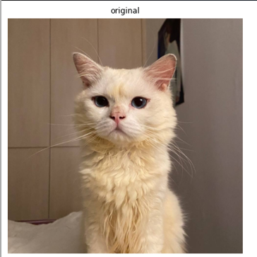
Original ($t = 1.00$)
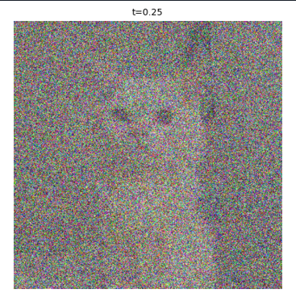
Noisy · $t = 0.25$
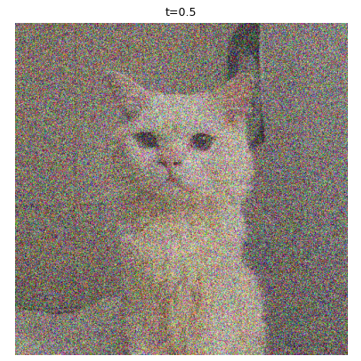
Noisy · $t = 0.50$Noisy · $t = 0.75$
A 1.2 Classical Denoising
A 1.2 / Gaussian Blur
Dividing by $t$ restores the clean signal amplitude ($\frac{x_t}{t} = x_1 + \frac{1-t}{t}\epsilon$), after which we apply Gaussian blur $\hat{x}_1^{\text{blur}} = G_\sigma(x_t / t)$. Stronger blur suppresses noise grain at the cost of fine spatial detail. For each $t$, $\sigma$ was chosen from $\{1, 2, 4, 8, 16\}$ by lowest MSE against the clean image:
$t = 0.25$: $\sigma =$ [8],
$t = 0.50$: $\sigma =$ [4],
$t = 0.75$: $\sigma =$ [2].
Observation:Because Gaussian filtering is a low-pass filter that cannot distinguish between high-frequency noise and high-frequency spatial detail, suppressing noise grain inherently blurs away sharp edges and fine textures like fur and whiskers. Performance degrades sharply as $t$ decreases: at $t = 0.75$ ($\sigma = 2.0$), mild blur yields a reasonably clear image, but at $t = 0.25$ ($\sigma = 8.0$), where noise amplitude is $3\times$ the signal, heavy blurring leaves large, low-frequency color blotches and completely loses fine features
A 1.3 One-Step Denoising
A 1.3 / Single-Step Velocity Extrapolation
Using one_step_denoise and the prompt "a high quality photo", we predict velocity $v_\theta(x_t, t, c)$ and compute $\hat{x}_1 = x_t + (1 - t)v_\theta(x_t, t, c)$. Because the network predicts velocity rather than noise, we extrapolate along $v_\theta$ instead of subtracting noise. Hover over any panel to inspect with the zoom lens.
OriginalNoisy · $t = 0.25$
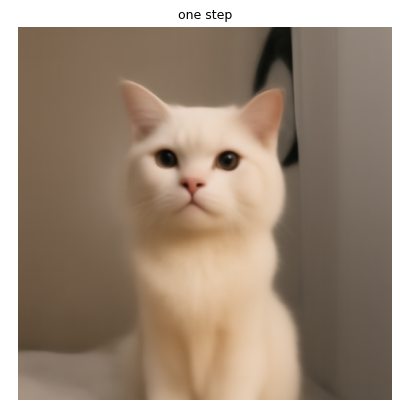
One-step · $t = 0.25$OriginalNoisy · $t = 0.50$
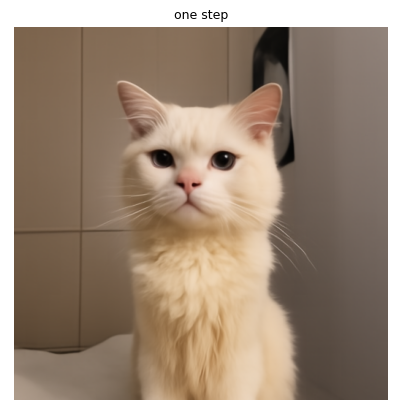
One-step · $t = 0.50$OriginalNoisy · $t = 0.75$
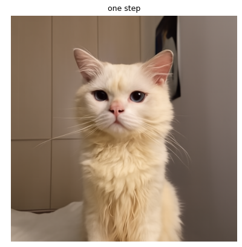
One-step · $t = 0.75$
Observation:One-step velocity extrapolation produces much cleaner, sharper reconstructions than Gaussian blur across all noise levels. However, at high noise ($t = 0.25$), a single linear step averages over possible clean images, leaving fine textures like fur and tile lines overly smooth compared to $t = 0.75$.
A 1.4 Visualizing Velocity
A 1.4 / Updates & Per-Pixel RMS Error
We compare the predicted update $(1 - t)\hat{v}_t$ against the ground-truth update $(1 - t)v_{gt} = (1 - t)(x_1 - \epsilon) = x_1 - x_t$, along with the per-pixel RGB root-mean-square error $E_t = \sqrt{\operatorname{mean}_{\text{RGB}}([(1-t)(\hat{v}_t - v_{gt})]^2)}$. All updates share a single symmetric RGB scale centered on middle gray, and all three error heatmaps share identical vmin/vmax bounds.
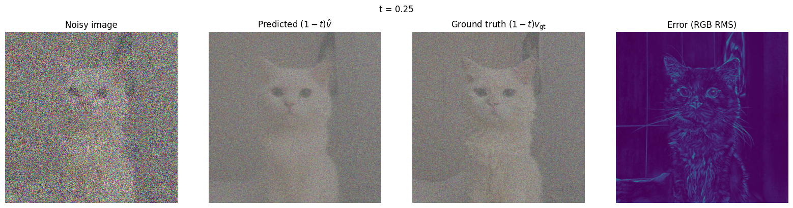
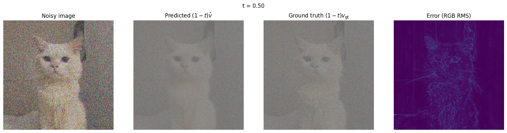
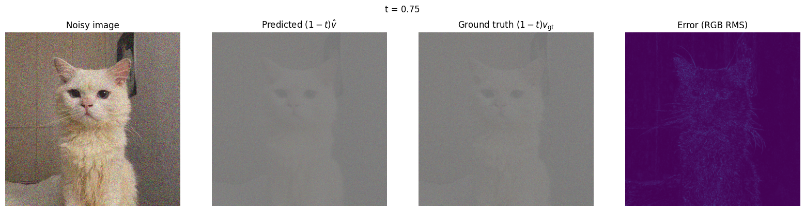
Stacked velocity update comparisons for $t = 0.25$, $0.50$, and $0.75$. Each panel shows the noisy image $x_t$, predicted update $(1-t)\hat{v}_t$, ground-truth update $(1-t)v_{gt}$, and RGB RMS error heatmap.
Observation:The per-pixel RMS error $E_t$ between the predicted update $(1-t)\hat{v}_t$ and ground-truth update $(1-t)v_{gt}$ is highest at $t = 0.25$ and decreases steadily as $t$ increases to $0.75$. Across all timesteps, the error heatmap is concentrated along high-frequency edges and fine textures—such as the cat's fur, whiskers, facial contours, and background boundaries—where exact fine details are hardest to predict from a noisy input.
A 1.5 Iterative Denoising with Euler Sampling
A 1.5 / 25 Euler Steps ($h = 0.02$)
We implemented euler_sample(x_start, t_start, step_size, velocity) with $h = 0.02$, recomputing velocity at every step and shortening the final step if needed to land exactly on $t = 1$. The sampler was verified analytically against a constant velocity field (including a starting time requiring a shortened final step). Below are the trajectory states starting from $t = 0.50$ (25 steps) and a static comparison of denoising methods.
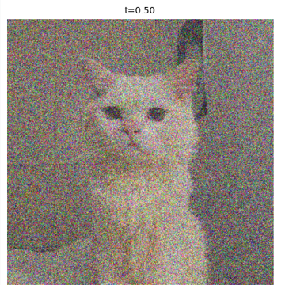
Initial · $t = 0.50$Step 5 · $t = 0.60$
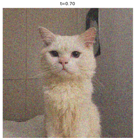
Step 10 · $t = 0.70$
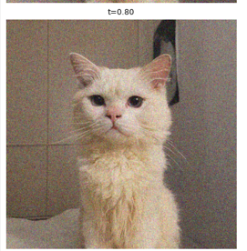
Step 15 · $t = 0.80$
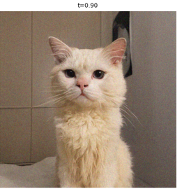
Step 20 · $t = 0.90$
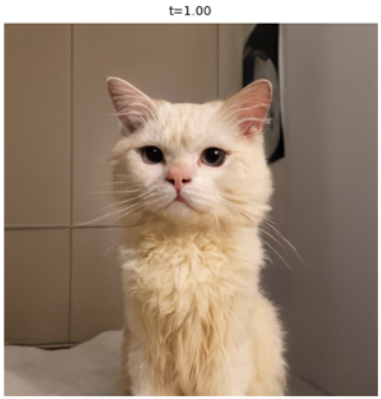
Final (Step 25) · $t = 1.00$
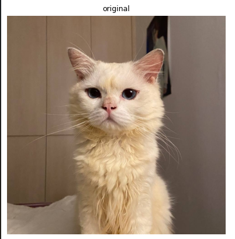
Original
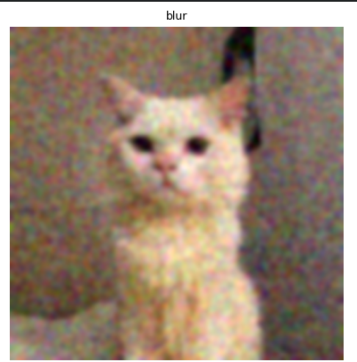
Gaussian Blur
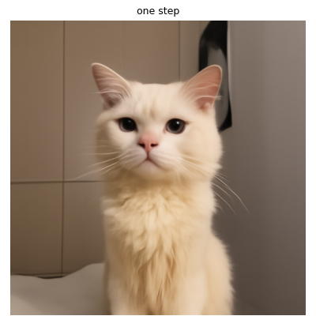
One-Step EstimateEuler Denoising
Observation:By recomputing the velocity field across 25 small steps ($h = 0.02$) from $t = 0.50$ to $t = 1.00$, iterative Euler sampling progressively removes noise and refines high-frequency structure. Compared to Gaussian blur (which leaves heavy blotches) and one-step extrapolation (which slightly over-smooths fine details), iterative Euler sampling recovers the sharpest edges and most realistic fur and whisker textures.
A 1.6 Generating Images from Noise
A 1.6 / Un-guided Pure Noise Generation
Starting from pure Gaussian noise at $t_{\text{start}} = 0$ with 50 Euler steps ($h = 0.02$) and prompt "a high quality photo":
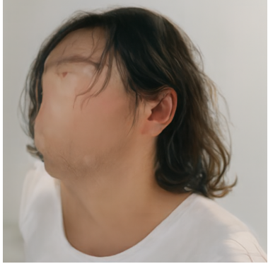
Seed 180
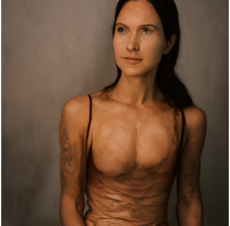
Seed 181
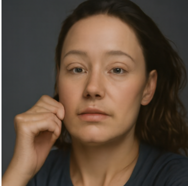
Seed 182
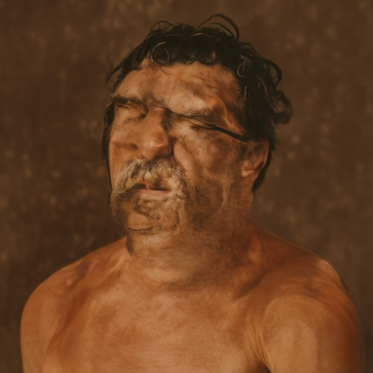
Seed 183Seed 184
Observation:Starting from pure Gaussian noise ($t_{\text{start}} = 0$) with 50 Euler steps ($h = 0.02$) and the generic prompt "a high quality photo", un-guided generation predominantly converges toward human portraits. However, without Classifier-Free Guidance (CFG), several generated samples suffer from severe anatomical distortions and blurry or missing facial features (particularly in Seeds 180, 181, and 183).
A.2 Conditional Generation and Guidance
Section 2.1
A 2.1 Classifier-Free Guidance (CFG)
A 2.1 / Guided Velocity ($w = 7$)
We implemented cfg_velocity using $v_{\text{cfg}} = v_c + w(v_c - v_u)$ with $w = 7$, $h = 0.02$, and the empty string "" as the unconditional branch. Both predictions evaluate the exact same $(x_t, t)$, and we verified that $w = 0$ reproduces $v_c$. Below are the 5 samples using the same initial noise seeds as Section 1.6.
Observation:Applying Classifier-Free Guidance ($w = 7$) on the same initial noise seeds eliminates the anatomical distortions seen in unguided sampling, dramatically improving facial realism, sharpness, and lighting quality. However, this comes at the cost of sample diversity: all five seeds collapse into uniform, front-facing studio headshots with solid backgrounds.
A.3 Creative Applications
Sections 3.1 – 3.4
A 3.1 Image-to-Image Editing (SDEdit)
A 3.1 / 6 Sweeps Across 7 Starting Times
We noise each input to $t_{\text{start}} \in \{0.02, 0.04, 0.06, 0.10, 0.14, 0.25, 0.50\}$ and denoise with "a high quality photo" ($w = 7, h = 0.02$, seed 180). A lower starting time means more noise, so the model has more freedom to change the image; a higher one stays close to the input. Inputs: the Campanile, two of my own photos (cat, flower), one web image and two hand drawings (sunset, cat).
Observation: At t = 0.02 only a blurry white column survives; at 0.04 to 0.06 the model draws a smooth tapered white tower against sky and trees but invents its own details (a bracket appears at 0.06). At t = 0.10 to 0.14 the framing is right but the tower is a plain obelisk with one window, no clock and no bell openings. Those come back at t = 0.25, and t = 0.50 is almost the original.
Observation: At t = 0.02 to 0.06 the sampler reads the beige blob and the wall as a portrait and produces people (a woman, a man, a blond person) in the same framing. A cat returns at t = 0.10 in the original pose but with smoother fur; t = 0.25 and 0.50 are close to the input.
My image 2: flower · Input: my own photo · seed 180
Observation: t = 0.02 and 0.04 are unrelated objects (a hand holding a gray device, a paper-like object on a table). From t = 0.06 a pink rose appears in the same place, blurry with bokeh at first; by t = 0.25 the original leaves and buds are back and t = 0.50 is nearly identical.
Web image: Yosemite illustration · Input: image from the web (credit above) · seed 180
Observation: At t = 0.02 an unrelated photo (a hand on a laptop). At t = 0.04 a blurry, misty river valley with the same layout. At t = 0.06 to 0.14 realistic photos of a mountain river with the original's composition. The stylized original, including the cliff on the left, is back by t = 0.25 to 0.50.
Hand drawing 1: sunset · Input: my own drawing · seed 180
Observation: At t = 0.02 to 0.04 only the yellow, blue, yellow color bands survive. t = 0.06 turns into a strange bowl-like object with bubbles, and a smudged dark boat appears at t = 0.10. From t = 0.14 the boat is redrawn, and the sun is back at t = 0.25.
Hand drawing 2: cat · Input: my own drawing · seed 180
Observation: A mostly white page gives the sampler very little to hold on to. At t = 0.02 it becomes a small gray plaque with garbled text, at 0.04 it is almost blank, at 0.06 a light blue flag, at 0.10 a figure in blue clothes and at 0.14 a faint human face. A redrawn pencil-style cat appears at t = 0.25, and t = 0.50 is almost the original.
Takeaway: Below about $t = 0.06$ the input is mostly destroyed and the model reads the leftover coarse colors as a different "high quality photo". Around $t = 0.10$ to $0.14$ the layout and subject return with re-invented details, and from $t = 0.25$ the result is close to the input. Flat drawings need a higher $t$ than photos to survive.
A 3.2 Text-Guided Image Editing
A 3.2 / Prompt-Driven Manifold Projection
Using the same starting times $\{0.02, 0.04, 0.06, 0.10, 0.14, 0.25, 0.50\}$ (same seed, $w = 7$, $h = 0.02$), we replace the generic prompt with one that describes the desired edit. The Campanile and my two photos from 3.1 are reused.
Observation: Prompt wins at t = 0.02 to 0.06: a full gothic spire with lightning, keeping only the tall centered shape. At t = 0.10 to 0.14 the Campanile's tower and framing return but with gothic ornament, flanking cathedral buildings and lightning. At t = 0.25 to 0.50 the tower wins and only faint lightning is left.
My image 1: cat · Input: my own photo · seed 180
Prompt: "a Renaissance oil painting of a noble cat"
Observation: At t = 0.02 to 0.04 the prompt wins: a chubby cat in a robe, painted in an old-master style. At t = 0.06 to 0.14 an oil-painted cat sits in a pose close to the original. At t = 0.25 only a faint painterly texture is left, and t = 0.50 is almost the input.
My image 2: flower · Input: my own photo · seed 180
Observation: At t = 0.02 to 0.06 a glass flower floats in water with bubbles and has nothing to do with the rose. At t = 0.10 to 0.14 a glass flower sits where the rose was, against the green leaves. At t = 0.25 the glassy rose is layered over the original leaves and buds, and t = 0.50 is nearly the original.
Takeaway: The prompt wins at $t \le 0.06$, the two compete at $t = 0.10$ to $0.14$ (the input's framing and pose with the prompt's style), and the original wins from $t = 0.25$ on, with only faint traces of the prompt.
A 3.3 Visual Anagrams
A 3.3 / 180° Flip Illusions
In visual_anagrams, at each step $t$ we average the upright guided velocity and the $180^\circ$-rotated guided velocity (flipping both spatial axes):
$$v = \frac{1}{2}\Big(v_{\text{cfg}}(x_t, t, p_1) + \operatorname{rotate}_{180}\!\big(v_{\text{cfg}}(\operatorname{rotate}_{180}(x_t), t, p_2)\big)\Big)$$
Illusion 1 (Upright): "an oil painting of a hot air balloon over a field" · Illusion 1 (Rotated 180°): "an oil painting of a man wearing a hat"Illusion 2 (Upright): "an oil painting of a lighthouse on a cliff" ·Illusion 2 (Rotated 180°): "an oil painting of a woman in a long dress"
Notes:found that visual anagrams work best when both prompts share a painterly style ("an oil painting of...") and complementary inverted silhouettes. In Illusion 1, the rounded hot air balloon and golden field naturally invert into the man's face and hat brim, while in Illusion 2, the vertical white lighthouse tower and dark cliff base seamlessly flip into the woman's long white dress and dark hair.
A 3.4 Hybrid Images
A 3.4 / Frequency-Factorized Flow
In make_hybrids, we combine the low-pass filtered velocity of prompt $p_1$ (distant view) with the high-pass residual of prompt $p_2$ (close view) using a Gaussian blur of kernel size $265$ and $\sigma = 16$:
$$v = f_{\text{lowpass}}(v_1) + \big(v_2 - f_{\text{lowpass}}(v_2)\big)$$
Hybrid 1 (Near / Full Size): ""a lithograph of a city skyline" Hybrid 1 (Far / 64×64): "a lithograph of a black cat sitting upright"Hybrid 2 (Near / Full Size): "a lithograph of a sailing ship on a stormy sea" Hybrid 2 (Far / 64×64): "a lithograph of a rubber duck"
Notes:In both hybrids, the low-pass filtered prompt $p_1$ ("a black cat sitting upright" and "a rubber duck") dominates the overall low-frequency silhouette and color palette, making those subjects clearly recognizable from afar ($64 \times 64$). Up close at full size, the high-pass residual of prompt $p_2$ ("a city skyline" and "a sailing ship on a stormy sea") dominates perception through fine architectural edges, rigging lines, and wave textures. The effect worked best when pairing prompts with matching lithograph styles and compatible coarse shapes (e.g., the cat's ears aligning with skyscraper spires, and the duck's body and beak forming the ship's hull and orange sail).
Part B · Training UNets on MNIST from Scratch
Flow Matching from Scratch
Dataset: MNIST ($28 \times 28$, pixels in $[0, 1]$, Seed 180, Colab T4 GPU). Part 1 trains a single-step $L_2$ denoiser and demonstrates why one-step regression collapses to the dataset centroid on pure noise. Part 2 trains time-conditioned and class-conditioned Flow Matching UNets ($t = 0$ noise $\to t = 1$ data, predicting velocity $x_1 - x_0$) with Classifier-Free Guidance $u = u_{\text{uncond}} + \gamma(u_{\text{cond}} - u_{\text{uncond}})$, $\gamma = 5.0$.
Run
Hidden Dim $D$
Batch
Optimizer
Learning Rate
Scheduler
Epochs
Single-Step Denoiser ($\sigma = 0.5$)
128
256
Adam
$1\times 10^{-4}$
None
5
Pure-Noise Denoiser
128
256
Adam
$1\times 10^{-4}$
None
5
Time-Conditioned UNet
64
64
Adam
$1\times 10^{-2}$
ExponentialLR ($\gamma = 0.1^{1/10}$ / epoch)
10
Class-Conditioned UNet
64
64
Adam
$1\times 10^{-2}$
ExponentialLR ($\gamma = 0.1^{1/10}$ / epoch)
10
Class-Conditioned (No Scheduler)
64
64
Adam
$2\times 10^{-3}$ (constant)
None
10
B.1 Training a Single-Step Denoising UNet
Sections 1.1 – 1.2.3
B 1.1 Implementing the UNet
B 1.1 / Architecture & Conditioning
Our UNet is built from atomic blocks—Conv ($3\times 3$, stride 1, BatchNorm, GELU), DownConv ($3\times 3$, stride 2), UpConv (ConvTranspose2d $4\times 4$, stride 2), Flatten (AvgPool2d $7\times 7$, GELU), and Unflatten (ConvTranspose2d $7\times 7$, stride 7)—and composed blocks (ConvBlock, DownBlock, UpBlock) with channel width $D$. Hover or click any block below to inspect tensor shapes, or toggle the conditioning overlay.
Hover/click any block in the diagram to inspect output tensor shape.
B 1.2 Noising Process Visualization
B 1.2 / $z = x + \sigma\epsilon$
We corrupt clean MNIST digits $x \in [0, 1]$ via $z = x + \sigma\epsilon$, $\epsilon \sim \mathcal{N}(0, I)$, across 8 test digits (columns) and 7 noise levels $\sigma \in \{0.0, 0.2, 0.4, 0.5, 0.6, 0.8, 1.0\}$ (rows, top to bottom).
Rows top-to-bottom: $\sigma = 0.0, 0.2, 0.4, 0.5, 0.6, 0.8, 1.0$ across the first 8 test digits.
B 1.2.1 Training the Single-Step Denoiser ($\sigma = 0.5$)
B 1.2.1 / $D = 128$, 5 Epochs
Trained on the MNIST training set with batch size 256, Adam ($\text{lr} = 10^{-4}$), hidden width $D = 128$ for 5 epochs at fixed $\sigma = 0.5$ with fresh noise sampled every batch under MSE loss.
Single-step denoiser training MSE loss over 5 epochs ($\sigma = 0.5$).
After Epoch 1 (Rows: Clean / Noisy $\sigma=0.5$ / Predicted)
After Epoch 5 (Rows: Clean / Noisy $\sigma=0.5$ / Predicted)
Observation:Epoch 1 outputs are already readable but slightly blurry, and by Epoch 5 stroke boundaries are noticeably crisper; the training loss drops rapidly from ~0.22 and plateaus smoothly.
B 1.2.2 Out-of-Distribution Testing
B 1.2.2 / Generalization Across $\sigma$
Evaluating our $\sigma = 0.5$-trained denoiser on the same test digit (7) corrupted at $\sigma \in \{0.0, 0.2, 0.4, 0.5, 0.6, 0.8, 1.0\}$.
Observation:Reconstructions remain clean for $\sigma \le 0.6$ (lower noise levels are trivial since less noise needs removal), begin to distort at $\sigma = 0.8$, and break down with residual background artifacts at $\sigma = 1.0$.
B 1.2.3 Denoising Pure Noise
B 1.2.3 / Centroid Collapse Under MSE
Training the exact same UNet architecture to map pure Gaussian noise $\epsilon \sim \mathcal{N}(0, I)$ directly to clean training digits $x$ under MSE loss. The final tile in each grid displays the mean training digit.
MSE to mean training digit:3.5e-4 after Epoch 1 $\to$ 1.2e-4 after Epoch 5.
Pure-noise denoiser training loss over 5 epochs.
Pure-Noise Outputs · Epoch 1 (MSE to mean digit: $3.5\times 10^{-4}$)
Pure-Noise Outputs · Epoch 5 (MSE to mean digit: $1.2\times 10^{-4}$)
Why Outputs Collapse to the Dataset Centroid:All outputs look like the same blurry, ghost-like composite digit regardless of the input noise tensor. Because pure Gaussian noise $\epsilon$ is statistically independent of the target digit $x$, the conditional expectation minimizing $\mathbb{E}[\|f_\theta(\epsilon) - x\|_2^2]$ is the unconditional dataset mean $\mathbb{E}[x]$ (the centroid of all training digits). The MSE against the mean digit shrinking from $3.5\times 10^{-4}$ (Epoch 1) to $1.2\times 10^{-4}$ (Epoch 5) confirms this convergence and motivates iterative flow matching.